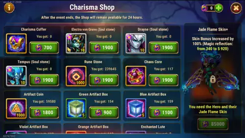

The Jade Flame event is a Skin+ event centered on Electra. It works as a two-step unlock: first you need to acquire the base Jade Flame skin, and only then the Skin+ upgrade becomes available in her Perfection Shop. This event also features Folio's Astral skin, which provides +10,650 Armor — a very solid defensive bonus if you have Folio in your lineup.
Electra's Jade Flame Skin+ grants Magic Reflection, a defensive stat that gives her a chance to completely dodge incoming magical damage and reflect 20% of it back onto the attacker. The base Jade Flame skin provides +2,960 Magic Reflection, while the Skin+ upgrade doubles that to +5,920 Magic Reflection — using the exact same skin stone investment. That is double the value for no extra upgrade cost.

Magic Reflection is a defensive stat that gives the hero a chance to completely avoid an incoming magical attack and reflect 20% of that damage back onto the attacker. When it triggers, Electra takes absolutely zero damage from that hit — this is not a damage reduction, it is a full dodge and reversal.
Here is a step-by-step breakdown so there is no confusion:
(Magic Reflection / (Magic Reflection + enemy's main stat)) × 100%
The "enemy's main stat" refers to the attacker's primary attribute — Strength, Agility, or Intelligence — whichever is their highest and defines their hero class. So if a mage with 30,000 Intelligence attacks Electra and she has 5,920 Magic Reflection, the chance to reflect would be: 5,920 / (5,920 + 30,000) = roughly 16.5%. That may not sound huge in isolation, but across a full battle with multiple magical attacks, those dodges accumulate and can save Electra's life many times over.
Let me be direct about Electra's role first. Her primary function in your team is to act as a front-line tank — absorbing damage, protecting your damage dealers, and staying alive as long as possible. She is exceptional at this because of her Immortal Shell ability, which converts all her Armor, Magic Defense, and Dodge into bonus Health at the start of battle. The more defensive stats Electra has, the larger her effective health pool becomes, and the longer she shields your team.
So is the Jade Flame Skin+ worth getting for Electra? Yes — especially if you use her in a Talisman of Revenge build. The Talisman of Revenge scales directly with Magic Reflection, making the +5,920 boost from the Skin+ a significant damage multiplier against magical teams. Against mage-heavy opponents like Satori, Folio, and Miu, Electra will reflect hits while also being nearly impossible to kill — a powerful combination.
⚠️ Important — DoT System Update:
The game has introduced a DoT (Damage over Time) system for some heroes. Heroes like Iris and Yasmine can deal DoT damage that bypasses Magic Reflection entirely, which does reduce the effectiveness of this skin specifically against those two heroes.
That said, Electra remains a very strong counter to Yasmine through a different mechanic. Yasmine's ability targets the enemy with the lowest Armor — but because Electra's Immortal Shell converts all her Armor, Magic Defense, and Dodge into Health at the very start of battle, Electra ends up with low visible Armor after the conversion, drawing Yasmine's focus directly onto her. While Yasmine attacks Electra (who is built to survive), your damage dealers safely take Yasmine down. This counter strategy still works effectively even with the DoT update.
The Talisman of Revenge build with Magic Reflection remains very strong against powerful enemies that have NOT received the DoT upgrade, such as Satori, Folio, Miu, and others. In most matchups, the Skin+ is still an excellent investment.
This is the part I need to explain very carefully, because a lot of players get confused about the steps. If you skip one, you will not be able to purchase the Skin+ at all.
I get this question a lot — "Alexandre, can't I just wait and get the Skin+ for free later?" — and technically yes, but let me explain exactly how long and painful that road is, so you can make an informed decision.
The base Jade Flame skin is not too bad to wait for. After roughly three months it starts appearing in Outland free chests, and after about six months you can buy it with Skin Certificates. That is an acceptable free-to-play timeline for the base skin.
The Skin+ is an entirely different story. After the event ends, the only reliable way to obtain a Skin+ is through the Heroic Chest. Here is the honest reality of that grind:
The conclusion is clear: the best time to get any hero's Skin+ is always during their dedicated Skin+ event. Waiting means committing to months or more than a year of uncertainty. For advanced players especially, this daily grind is deeply frustrating — just 1 free chest per day, 1 more from watching an ad, and the slightest scheduling slip adds days to your total.
The Jade Flame event is full of offers, and I know the question I get most is "Alexandre, where is the best place to spend my emeralds?" — so let me break it down clearly.
The event features a 55% discount on Outland Chests. This is one of the most valuable deals in the game right now. Here is why: skin stones in Hero Wars Alliance have become one of the hardest resources to keep up with. There are so many new skins releasing constantly that you will always need more stones than daily play provides. Buying Outland Chests at 55% off is an extremely efficient way to stock up and earn more Charisma Coins at the same time.
To take advantage of those discounts, you need emeralds. During this event, there are x4 emerald purchase offers, meaning you get four times the normal amount for the same price — one of the best emerald deals you will see in the game.
💡 Quick note:
The best place to purchase those discounted emeralds is through the official Hero Wars Hub store. When you buy through the Hub, you get:
If you plan to take advantage of the event through the official Hero Wars Hub store, remember to use the code ALEXANDREGAMES at checkout.
This does not cost you anything extra and helps me keep the blog running and producing detailed event guides and skin evaluations like this one. Thank you!
Once you have secured the Skin+ (or if the base skin was out of reach and you have leftover Charisma Coins), here is the best priority order for the remaining items in Electra's Perfection Shop:
A critical reminder for soul stone purchases: aim for at least 4 stars on any hero before switching to the Evolution Booster (book of evolution) to finish the star progression. Going past 4 stars with raw soul stones from the event shop is often inefficient — use the book instead and save your coins. You need a minimum of level 50 and 4 evolution stars to activate a hero's Legendary Relic, which is a major progression milestone. And remember: to upgrade Legendary Relics beyond level 9, the hero must be at 6 stars or Absolute Star — so plan your star progression carefully.
Electra's survivability comes from her Immortal Shell ability, which converts all her Armor, Magic Defense, and Dodge into bonus Health at the start of battle. This means the more defensive stats her skins provide, the larger her effective health pool — making her one of the most efficient tanks in the game to build. Below is a summarized priority table. For detailed breakdowns of each skin's impact, visit the full Electra Character Guide.
| Skin | Stat | Value | Priority |
|---|---|---|---|
| Demonic Skin | Armor | +10,650 → ~+894,000 Health | Very High |
| Winter Skin | Magic Defense | +10,650 → ~+894,000 Health | Very High |
| Jade Flame Skin+ | Magic Reflection | +2,960 (base) / +5,920 (Skin+) | High |
| Oblivion Skin | Toughness | +2,960 | High |
| Default Skin | Strength | +1,365 → +54,600 Health | High |
Focus on the Demonic and Winter skins first — each converts into roughly +894,000 Health through Immortal Shell, which is over 16 times more effective than the Strength gain from the Default Skin. The Jade Flame Skin+ is the priority upgrade from this event, especially if you are running a Talisman of Revenge build. The Oblivion Skin's Toughness reduces incoming damage when Electra's health is low, making it very valuable in extended fights.
Note: +10,650 Armor or +10,650 Magic Defense each convert into approximately +894,000 Health through Immortal Shell, while +1,365 Strength adds only +54,600 Health directly — that is a 16× difference in effective survivability, which is exactly why the defensive skins are top priority for any tank-focused Electra build.
Did you like our Electra Jade Flame Skin+ Event Guide? Is there something you didn't understand or would like to suggest changes to? We invite you to join our comment section on the Alexandre Games Blog page. Feel free to express your opinion, clarify your doubts, and share your suggestions.
Click the button below to get started: